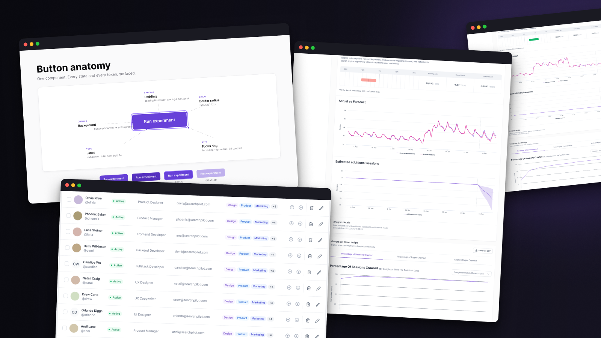
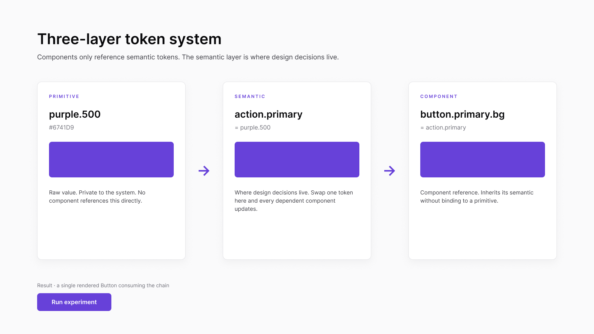
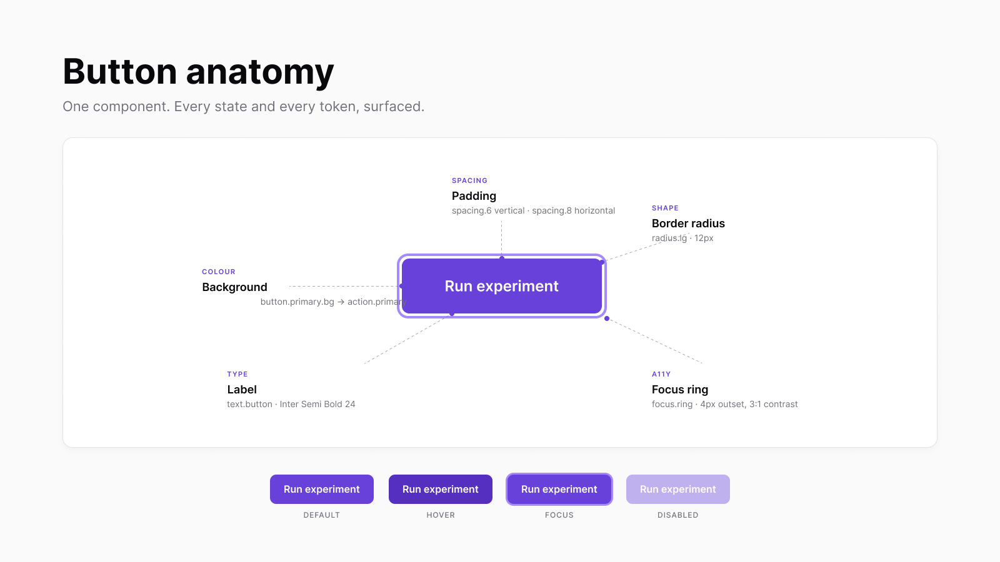
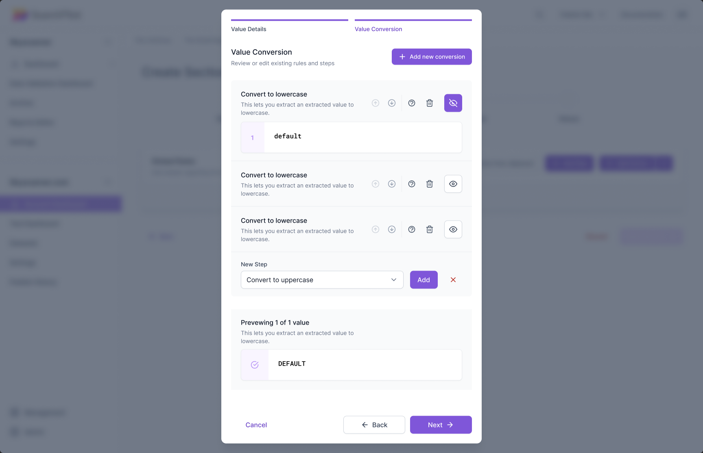
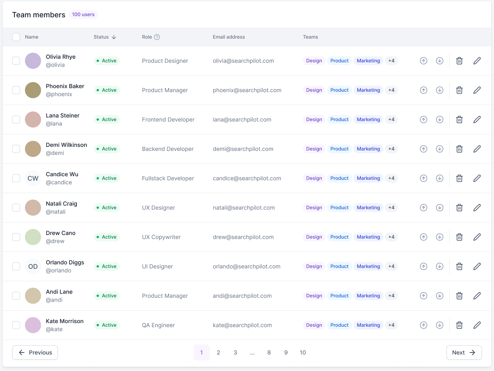
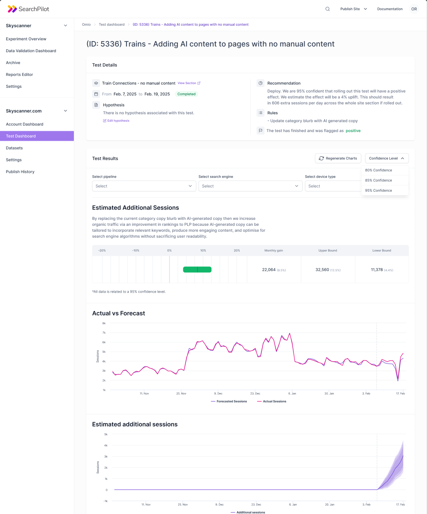

SearchPilot · Design Engineer
SearchPilot — Pilot UI Design System
Designing and building the in-house UI library for an SEO testing platform: tokens, components, and a research-before-build culture.
TL;DR
SearchPilot is an SEO testing platform used by some of the biggest e-commerce, travel, and publishing sites on the internet. When I joined there was no design system. There was Tailwind, some component code, and a handful of half-finished Figma references that didn’t match what was actually shipping. I built Pilot UI from scratch: tokens, a React and Next.js component library, and a Docusaurus site with embedded code editors that people actually opened. The metrics are above the fold. The thing I’d rather you take away is that the team stopped saying let’s ship it, let’s ship it and started saying let’s understand the user first, then prototype, then ship.
Context
SearchPilot answers one question for SEO teams: will this change move organic traffic? It splits live production traffic between an original and a variant of a webpage, measures the difference, and returns a verdict you can argue with statistically. The people on the other end of it are SEO managers, analysts, and engineers at companies whose traffic numbers are large enough that a one-percent lift is a meaningful business case. They are not novices. They want the tool to be fast and to get out of their way.
I joined the platform team as Design Engineer. My remit covered research, product design, and front-end code, which is the only useful shape for that role: anything narrower and you end up writing tickets nobody reads.
The state I walked into
A stack was already in place: React, Next.js, TypeScript, and Tailwind. Some component code existed. Some fragments of UI documentation lived in Figma. None of it was complete, and the Figma fragments did not match the code.
The symptoms were the kind that compound silently. The same dropdown looked different in two adjacent flows. The same primary purple shifted in lightness from one page to the next. Whatever decisions designers thought they had made in Figma were being re-made by whichever engineer happened to be writing the next screen, and the user paid for it.
The thing I noticed faster than the visual drift, though, was that the team had stopped hearing the users. Several people kept reporting the same problems in interviews and support tickets, and those problems had been normalised internally. That’s just how it works. There’s a little hack for that. When a behaviour gets named like that, it doesn’t get fixed. It gets routed around, forever.
Most screens were being designed from the inside out. The user needs to enter this field, then see this data, then submit. The flow that emerged was the flow that was easiest to build, which is not the same flow as the one that’s easiest to use, and the gap between those two things was where the product was losing trust.
Approach
I’m wary of plans with four moves and one of them being something like foster a culture of quality. So I’ll keep this practical.
The stack was staying. React, Next.js, TypeScript, Tailwind. Switching to CSS-in-JS would have bought a theoretical kind of elegance and cost months of momentum, and there was no engineer on the team who’d asked for it. Stack continuity is a feature; defending it is part of the job.
The work needed to start with tokens, because every component-level decision past that point depended on them. A three-layer model: primitive values at the bottom (raw colour, spacing, radius), a semantic layer in the middle where the design decisions actually live (surface.default, text.primary, border.subtle), and component tokens at the top (button.primary.bg). Components only ever reference the semantic layer. Primitives stay private. Figma variables and code tokens line up one-to-one, which closes the drift that had been quietly destroying consistency.
The documentation needed to be something people opened more than once. Storybook is fine, but Storybook is mostly a thing developers visit to debug a prop they forgot. I wanted designers, PMs, and new starters in the docs too. A dedicated Docusaurus site, components imported live from the library, an embedded code editor on every page so you could change props and see the result update without leaving the browser tab. Spec you can press buttons on.
And the research needed to happen before any of this got prioritised, because I didn’t trust my own instincts about which surfaces mattered most. Twenty-plus interviews with SEO managers and analysts. Not for quotes. For proximity.
How the team committed to it
I walked into the second week with a slide deck. It mapped what I’d seen in the codebase and on the support side, and proposed the path: structure the design system, tokenise everything, refactor the components, revisit the user experience. There was no resistance. The team had been feeling all of this for a while; what they’d been missing was someone whose job was to translate the pain into a plan. The Design Engineer role exists for exactly that, and the deck made the bridge visible. After that meeting the question stopped being should we do this and started being which week.
Process
Foundations
Tokens first. Three layers, Figma and code in lockstep, decisions concentrated in the semantic layer so a contrast adjustment becomes a single edit instead of a multi-hour pull request. The elevation system stayed deliberately small, a handful of shadow steps and a blur token for overlays, because depth invented per-surface is one of the fastest ways to lose visual consistency.

The same trace in code. The button token does not know what colour it is. It trusts action.primary to mean primary, and action.primary trusts purple.500 to be a value worth pointing at.
// tokens/primitive.ts — raw values, private to the system
export const colour = {
purple: { 500: '#6741D9' },
};
// tokens/semantic.ts — where design decisions live
export const action = {
primary: colour.purple[500],
};
// tokens/component.ts — components only reference semantic
export const button = {
primary: { bg: action.primary },
};
Components
Once the tokens held up, the primitives came in waves. Buttons, inputs, dropdowns, toggles, checkboxes. Then badges, avatars, tooltips. Then the composites: card headers, modals, tables, charts.
The honest answer about the hardest part is that it wasn’t a single component. It was the data layer. Tables and charts are where the product actually lives, because SearchPilot is fundamentally about showing experiment results, and that means sorting, filtering, dense data, multiple view modes, dozens of edge cases, all of it still readable and keyboard-friendly. Almost every interesting tradeoff in the system ended up taking place inside those two component families.

Patterns and navigation
The visible cost of an inconsistent UI lives in the primitives. The real cost lives one layer up, in the composite patterns that get reassembled differently on every screen. Codifying card headers, modals, tables, and navigation produced more consistency dividend than I expected, mostly because those patterns were where the worst per-screen reinvention had been happening.

Tables earned their own attention because they were everywhere. Member admin, account lists, experiment indexes, audit logs. Codified as one component with a row anatomy you could trust meant the rest of the surface stopped fighting for visual real estate.

Documentation people would actually open
The artefact I’m proudest of from this engagement is the Pilot UI Docusaurus site. Every component has its own page. Prose, anatomy, props table, accessibility notes, and an embedded code editor where you can change props live and watch the component re-render in place without leaving the docs. Components are imported from the actual Pilot UI library, so there is no second copy to maintain and no risk of the docs lying about what ships.
The reaction was the part that surprised me. Designers reviewed against it. Engineers reached for it before writing new components. New starters onboarded through it almost entirely. I have written plenty of spec documents that nobody opened twice. This was the first time I built one that people kept open in a tab.
If I had to pick a single thing from this engagement to recommend to someone starting a similar one, it would be this. Documentation you can press buttons on changes the conversation. Static specs argue with the code forever; live specs win.
Research
The interviews were less about gathering quotes and more about restoring proximity to the user. The clearest pattern was the one I described earlier: the team had been designing from a technical lens. The user enters this. Then sees this. Then submits this. And the flows that emerged were the flows that were easiest to build. It is the kind of thing that nobody on the team would defend if you said it to them out loud, but everybody had drifted into doing.
The interviews made it normal, almost obligatory, to say let’s prototype the user’s journey before we ship the feature. After about the eighth or ninth interview, I think we need to talk to a user stopped being a thing I had to push for and started being a thing other people said in meetings.
What changed
The numbers are above the fold. Around thirty-five percent Pilot UI adoption inside nine months. Roughly twenty percent sprint velocity uplift. They matter, and I’d cite them in interviews, but they are not the part of the work I think about.
The part I think about is the rhythm change. The team moved from vamos fazer, vamos fazer (let’s ship it, let’s ship it) to let’s understand the user, prototype it, test it, then implement. Research moved from the back end of the process (after complaints) to the front end (before commitments). That sounds small written down. In practice it changes everything about how a team spends its time.
I want to be honest about accessibility. I brought a11y into the component layer: focus states, label associations, contrast pairs that don’t fail audit on first try. The foundations are there in the tokens and the components. But I would not claim deep WCAG rigour from this engagement. No users with severe accessibility needs were pushing the priority up, the timebox was real, and other problems were louder. If I went back in for round two, that is the work I would want to do.
The cleanest test of any of this is what the experiment results page looks like once the system has settled into it. This is the surface analysts open every day to argue with their data, and the thing every other component in the system was built to serve.

What I’d want anyone reading this to know
Tokens first. There is no shortcut around this, and I tried. Early on, with some component code already in place, I started structuring the components before the tokens were stable. It fell apart the second we needed to change anything semantic, and every component became a copy-paste exercise. I noticed early enough that no specific component had to be rebuilt, but the lesson is real and it cost some time. If you are starting a design system on top of existing code, the temptation to skip ahead is going to be enormous. Don’t.
Stack continuity is underrated. Tailwind is not the prettiest answer to the how do we style our app question, but it was the answer the team was already comfortable with. Switching it would have cost more momentum than the system itself produced. Most design system engagements I read about over-index on green-field elegance. The harder skill is making the existing stack feel like a deliberate choice.
Documentation you can press buttons on is the highest-leverage thing I built. Higher than the tokens. Higher than any individual component. A Docusaurus site with live code editors moved the system from spec people read to spec people use, and once that shift happened the rest of the work pulled itself forward. If I were starting again tomorrow, the docs site would be sprint one.
And the system only really clicks once people see it inside the product. Spec documents persuade nobody on their own. End-to-end flows running through the components, on real screens, did more for adoption than any amount of evangelising.